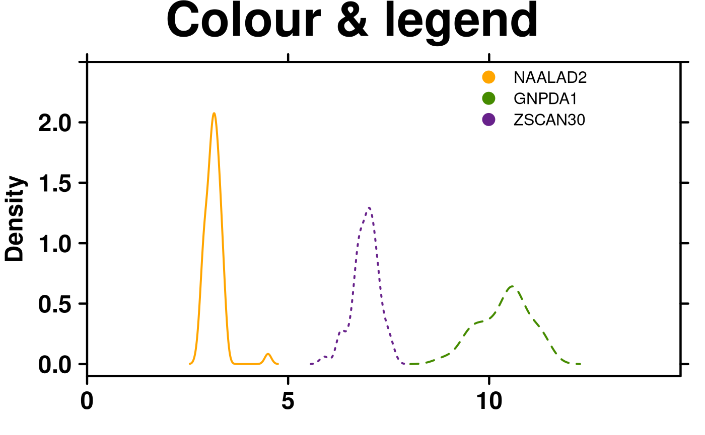
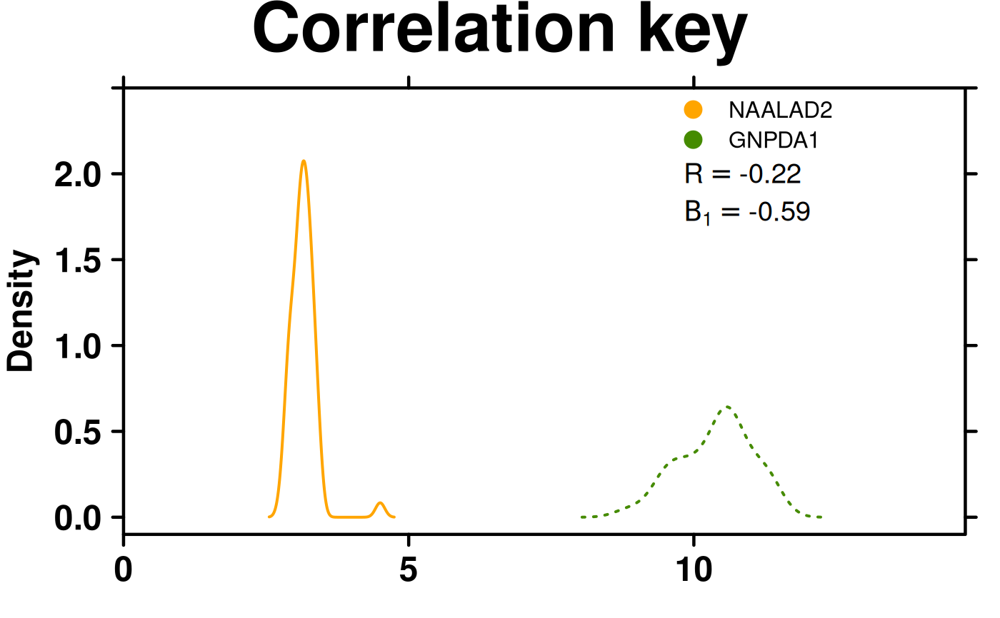
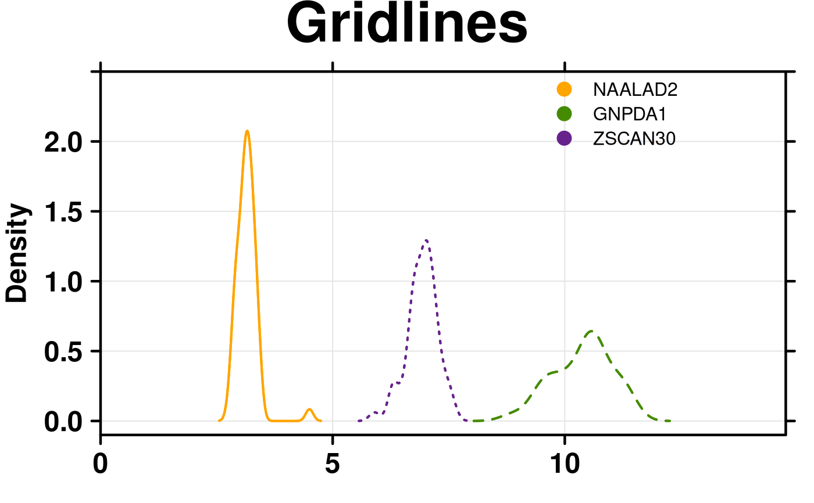
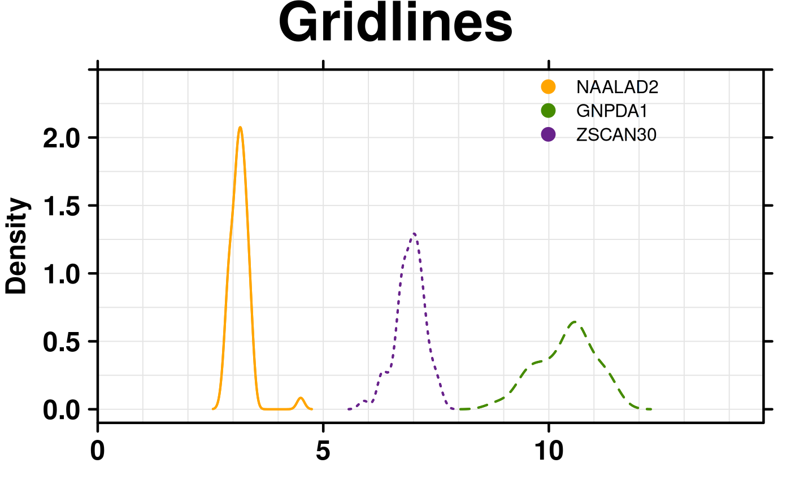
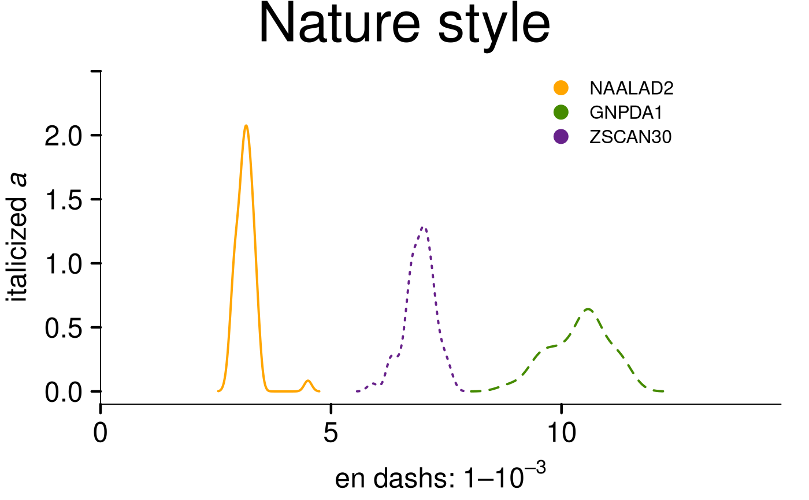

Make a density plot
create.densityplot.RdTakes a list of vectors and creates a density-plot with each vector as a separate curve
Usage
create.densityplot(
x,
filename = NULL,
main = NULL,
main.just = 'center',
main.x = 0.5,
main.y = 0.5,
main.cex = 3,
xlab.label = NULL,
ylab.label = 'Density',
xlab.cex = 2,
ylab.cex = 2,
xlab.col = 'black',
ylab.col = 'black',
xlab.top.label = NULL,
xlab.top.cex = 2,
xlab.top.col = 'black',
xlab.top.just = 'center',
xlab.top.x = 0.5,
xlab.top.y = 0,
type = 'l',
lty = 'solid',
cex = 0.75,
pch = 19,
col = 'black',
lwd = 2,
bandwidth = 'nrd0',
bandwidth.adjust = 1,
xlimits = NULL,
ylimits = NULL,
xat = TRUE,
yat = TRUE,
xaxis.lab = NA,
yaxis.lab = NA,
xaxis.cex = 1.5,
yaxis.cex = 1.5,
xaxis.rot = 0,
yaxis.rot = 0,
xaxis.col = 'black',
yaxis.col = 'black',
xaxis.fontface = 'bold',
yaxis.fontface = 'bold',
xaxis.tck = 1,
yaxis.tck = 1,
xgrid.at = xat,
ygrid.at = yat,
key = list(text = list(lab = c(''))),
legend = NULL,
top.padding = 0.1,
bottom.padding = 0.7,
left.padding = 0.5,
right.padding = 0.1,
add.axes = FALSE,
abline.h = NULL,
abline.v = NULL,
abline.lty = NULL,
abline.lwd = NULL,
abline.col = 'black',
add.rectangle = FALSE,
xleft.rectangle = NULL,
ybottom.rectangle = NULL,
xright.rectangle = NULL,
ytop.rectangle = NULL,
col.rectangle = 'transparent',
alpha.rectangle = 1,
add.text = FALSE,
text.labels = NULL,
text.x = NULL,
text.y = NULL,
text.anchor = "centre",
text.col = "black",
text.cex = 1,
text.fontface = "bold",
height = 6,
width = 6,
size.units = 'in',
resolution = 1600,
enable.warnings = FALSE,
description = 'Created with BoutrosLab.plotting.general',
style = 'BoutrosLab',
preload.default = 'custom',
use.legacy.settings = FALSE,
inside.legend.auto = FALSE
);Arguments
- x
A list of vectors, each of which will be plotted as a separate curve in the final plot
- filename
Filename for tiff output, or if NULL returns the trellis object itself
- main
The main title for the plot (space is reclaimed if NULL)
- main.just
The justification of the main title for the plot, default is centered
- main.x
The x location of the main title, deault is 0.5
- main.y
The y location of the main title, default is 0.5
- main.cex
Size of text for main plot title, defaults to 2
- xlab.label
The label for the x-axis
- ylab.label
The label for the y-axis, defaults to “Density”
- xlab.cex
Size of x-axis label, defaults to 2
- ylab.cex
Size of y-axis label, defaults to 2
- xlab.col
Colour of the x-axis label, defaults to “black”
- ylab.col
Colour of the y-axis label, defaults to “black”
- xlab.top.label
The label for the top x-axis
- xlab.top.cex
Size of top x-axis label
- xlab.top.col
Colour of the top x-axis label
- xlab.top.just
Justification of the top x-axis label, defaults to centered
- xlab.top.x
The x location of the top x-axis label
- xlab.top.y
The y location of the top y-axis label
- type
Plot type
- lty
Line type
- cex
Character expansion for plotting symbol
- pch
Plotting character
- col
Point/line colour
- lwd
Thickness of width of any best-fit lines
- bandwidth
Smoothing bandwidth, or character string giving rule to choose bandwidth ('nrd0', 'nrd', 'ucv', 'bcv', 'sj', or 'sj-ste'). Passed to base R function density.
- bandwidth.adjust
Adjustment parameter for the bandwidth (bandwidth used is bandwidth*bandwidth.adjust). Makes it easy to specify bandwidth as a proportion of the default.
- xlimits
Two-element vector giving the x-axis limits, defaults to automatic
- ylimits
Two-element vector giving the y-axis limits, defaults to automatic
- xat
Vector listing where the x-axis labels should be drawn, defaults to automatic
- yat
Vector listing where the y-axis labels should be drawn, defaults to automatic
- xaxis.lab
Vector listing x-axis tick labels, defaults to automatic
- yaxis.lab
Vector listing y-axis tick labels, defaults to automatic
- xaxis.cex
Size of x-axis tick labels, defaults to 1
- yaxis.cex
Size of x-axis tick labels, defaults to 1
- xaxis.rot
Rotation of x-axis tick labels; defaults to 0
- yaxis.rot
Rotation of y-axis tick labels; defaults to 0
- xaxis.col
Colour of the x-axis tick labels, defaults to “black”
- yaxis.col
Colour of the y-axis tick labels, defaults to “black”
- xaxis.fontface
Fontface for the x-axis scales
- yaxis.fontface
Fontface for the y-axis scales
- xaxis.tck
Specifies the length of the tick marks for x-axis, defaults to 1
- yaxis.tck
Specifies the length of the tick marks for y-axis, defaults to 1
- xgrid.at
Vector listing where the x-axis grid lines should be drawn, defaults to xat
- ygrid.at
Vector listing where the y-axis grid lines should be drawn, defaults to yat
- key
A list giving the key (legend). The default suppresses drawing
- legend
Add a legend to the plot. Helpful for adding multiple keys and adding keys to the margins of the plot. See xyplot.
- top.padding
A number giving the top padding in multiples of the lattice default
- bottom.padding
A number giving the bottom padding in multiples of the lattice default
- left.padding
A number giving the left padding in multiples of the lattice default
- right.padding
A number giving the right padding in multiples of the lattice default
- add.axes
Allow axis lines to be turned on or off
- abline.h
Specify the superimposed horizontal line(s)
- abline.v
Specify the superimposed vertical line(s)
- abline.lty
Specify the superimposed line type
- abline.lwd
Specify the superimposed line width
- abline.col
Specify the superimposed line colour (defaults to black)
- add.rectangle
Allow a rectangle to be drawn, default is FALSE
- xleft.rectangle
Specifies the left x coordinate of the rectangle to be drawn
- ybottom.rectangle
Specifies the bottom y coordinate of the rectangle to be drawn
- xright.rectangle
Specifies the right x coordinate of the rectangle to be drawn
- ytop.rectangle
Specifies the top y coordinate of the rectangle to be drawn
- col.rectangle
Specifies the colour to fill the rectangle's area
- alpha.rectangle
Specifies the colour bias of the rectangle to be drawn
- add.text
Allow additional text to be drawn, default is FALSE
- text.labels
Labels for additional text
- text.x
The x co-ordinates where additional text should be placed
- text.y
The y co-ordinates where additional text should be placed
- text.anchor
Part of text that should be anchored to x/y coordinates. Defaults to 'centre'. Use 'left' or 'right' to left or right-align text.
- text.col
The colour of additional text
- text.cex
The size of additional text
- text.fontface
The fontface for additional text
- height
Figure height, defaults to 6 inches
- width
Figure width, defaults to 6 inches
- size.units
Figure units, defaults to inches
- resolution
Figure resolution in dpi, defaults to 1600
- enable.warnings
Print warnings if set to TRUE, defaults to FALSE
- description
Short description of image/plot; default NULL.
- style
defaults to “BoutrosLab”, also accepts “Nature”, which changes parameters according to Nature formatting requirements
- preload.default
ability to set multiple sets of diffrent defaults depending on publication needs
- use.legacy.settings
boolean to set wheter or not to use legacy mode settings (font)
- inside.legend.auto
boolean specifying whether or not to use the automatic inside legend function
Value
If filename is NULL then returns the trellis object, otherwise creates a plot and returns a 0/1 success code.
Warning
If this function is called without capturing the return value, or specifying a filename, it may crash while trying to draw the histogram. In particular, if a script that uses such a call of create histogram is called by reading the script in from the command line, it will fail badly, with an error message about unavailable fonts:
Error in grid.Call.graphics("L_text", as.graphicsAnnot(x$label), x$x, )
Invalid font type
Calls: print ... drawDetails.text -> grid.Call.graphics -> .Call.graphics
Examples
set.seed(12345);
simple.data <- data.frame(
x = rnorm(1000),
y = rnorm(1000, mean = 3, sd = 3)
);
create.densityplot(
# filename = tempfile(pattern = 'Densityplot_Simple', fileext = '.tiff'),
x = simple.data,
main = 'Simple',
description = 'Barplot created by BoutrosLab.plotting.general'
);
# format data
format.data <- microarray[1:3,1:58];
format.data <- as.data.frame(t(format.data));
# Minimal Input
create.densityplot(
# filename = tempfile(pattern = 'Densityplot_Minimal_Input', fileext = '.tiff'),
x = format.data,
main = 'Minimal input',
description = 'Barplot created by BoutrosLab.plotting.general',
resolution = 50
);
# Line type
create.densityplot(
# filename = tempfile(pattern = 'Densityplot_Line_Type', fileext = '.tiff'),
x = format.data,
main = 'Line type',
# Line type
lty = c('solid','dashed','dotted'),
description = 'Barplot created by BoutrosLab.plotting.general',
resolution = 50
);
# Axes & Labels
create.densityplot(
# filename = tempfile(pattern = 'Densityplot_Axes_Labels', fileext = '.tiff'),
x = format.data,
main = 'Axes & labels',
lty = c('solid','dashed','dotted'),
# Axes & Labels
ylimits = c(-0.1, 2.5),
ylab.cex = 1.5,
xat = seq(0, 13, 1),
description = 'Barplot created by BoutrosLab.plotting.general',
resolution = 50
);
# \donttest{
# Colour change & Legend
create.densityplot(
# filename = tempfile(pattern = 'Densityplot_Colour_Legend', fileext = '.tiff'),
x = format.data,
main = 'Colour & legend',
lty = c('solid','dashed','dotted'),
ylimits = c(-0.1, 2.5),
ylab.cex = 1.5,
# Colours
col = default.colours(3),
# Legend
legend = list(
inside = list(
fun = draw.key,
args = list(
key = list(
points = list(
col = default.colours(3),
pch = 21,
cex = 1.5,
fill = default.colours(3)
),
text = list(
lab = colnames(format.data)
),
padding.text = c(0,5,0),
cex = 1
)
),
x = 0.65,
y = 0.97,
draw = FALSE
)
),
description = 'Barplot created by BoutrosLab.plotting.general',
resolution = 50
);

# Correlation key
create.densityplot(
# filename = tempfile(pattern = 'Densityplot_Correlation_Key', fileext = '.tiff'),
x = format.data[,1:2],
main = 'Correlation key',
lty = c('solid','dotted'),
ylimits = c(-0.1, 2.5),
ylab.cex = 1.5,
col = default.colours(2),
legend = list(
inside = list(
fun = draw.key,
args = list(
key = list(
points = list(
col = default.colours(2),
pch = 21,
cex = 1.5,
fill = default.colours(2)
),
text = list(
lab = colnames(format.data)[1:2]
),
padding.text = c(0,5,0),
cex = 1
)
),
x = 0.65,
y = 0.97,
draw = FALSE
),
# Correlation key accepts two vectors
inside = list(
fun = draw.key,
args = list(
key = get.corr.key(
x = as.numeric(format.data[,1]),
y = as.numeric(format.data[,2]),
label.items = c('pearson','beta1'),
alpha.background = 1,
key.cex = 1.2
)
),
x = 0.65,
y = 0.85,
corner = c(0,1)
)
),
description = 'Barplot created by BoutrosLab.plotting.general',
resolution = 200
);

# Gridlines
create.densityplot(
# filename = tempfile(pattern = 'Densityplot_Gridlines_1', fileext = '.tiff'),
x = format.data,
main = 'Gridlines',
lty = c('solid','dashed','dotted'),
ylimits = c(-0.1, 2.5),
ylab.cex = 1.5,
col = default.colours(3),
legend = list(
inside = list(
fun = draw.key,
args = list(
key = list(
points = list(
col = default.colours(3),
pch = 21,
cex = 1.5,
fill = default.colours(3)
),
text = list(
lab = colnames(format.data)
),
padding.text = c(0,5,0),
cex = 1
)
),
x = 0.65,
y = 0.97,
draw = FALSE
)
),
# Grid lines
type = c('l','g'),
description = 'Barplot created by BoutrosLab.plotting.general',
resolution = 200
);

# Gridlines
create.densityplot(
# filename = tempfile(pattern = 'Densityplot_Gridlines_2', fileext = '.tiff'),
x = format.data,
main = 'Gridlines',
lty = c('solid','dashed','dotted'),
ylimits = c(-0.1, 2.5),
ylab.cex = 1.5,
col = default.colours(3),
legend = list(
inside = list(
fun = draw.key,
args = list(
key = list(
points = list(
col = default.colours(3),
pch = 21,
cex = 1.5,
fill = default.colours(3)
),
text = list(
lab = colnames(format.data)
),
padding.text = c(0,5,0),
cex = 1
)
),
x = 0.65,
y = 0.97,
draw = FALSE
)
),
# Grid lines
type = c('l','g'),
xgrid.at = seq(0,14,1),
ygrid.at = seq(0,2.5,0.25),
description = 'Barplot created by BoutrosLab.plotting.general',
resolution = 200
);

# Nature style
create.densityplot(
# filename = tempfile(pattern = 'Densityplot_Nature_style', fileext = '.tiff'),
x = format.data,
main = 'Nature style',
lty = c('solid','dashed','dotted'),
ylimits = c(-0.1, 2.5),
ylab.cex = 1.5,
xlab.cex = 1.5,
col = default.colours(3),
legend = list(
inside = list(
fun = draw.key,
args = list(
key = list(
points = list(
col = default.colours(3),
pch = 21,
cex = 1.5,
fill = default.colours(3)
),
text = list(
lab = colnames(format.data)
),
padding.text = c(0,5,0),
cex = 1
)
),
x = 0.65,
y = 0.97,
draw = FALSE
)
),
# Grid lines
style = 'Nature',
# demonstrating how to italicize character variables
ylab.lab = expression(paste('italicized ', italic('a'))),
# demonstrating how to create en-dashes
xlab.lab = expression(paste('en dashs: 1','\u2013', '10'^'\u2013', ''^3)),
resolution = 200
);
#> Warning: Setting resolution to 1200 dpi.
#> Warning: Nature also requires italicized single-letter variables and en-dashes
#> for ranges and negatives. See example in documentation for how to do this.
#> Warning: Avoid red-green colour schemes, create TIFF files, do not outline the figure or legend.

# }